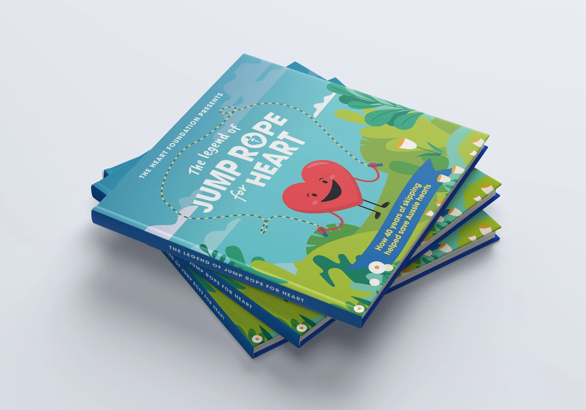
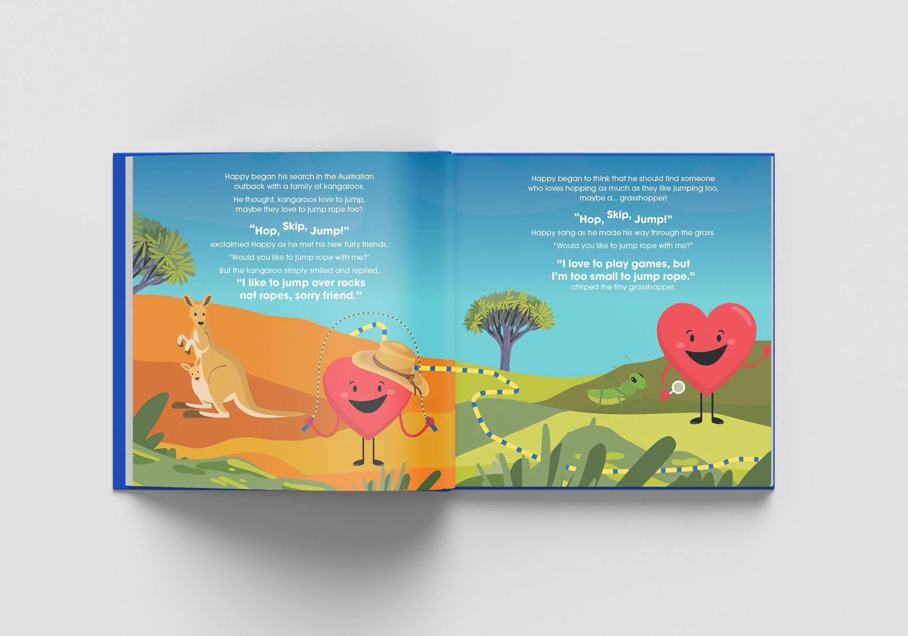

← All work
Jump Rope for Heart.
A storybook that turned a school fundraising invitation into an adventure.
Heart Foundation AustraliaCreative direction & production support

A story worth opening. A poster worth keeping.
Happy Heart travels around Australia looking for the perfect skipping companions, only to discover they were children all along. The eight-page storybook unfolded into an A3 poster, giving teachers something to share and a reason to bring the program into the classroom.
I supported creative direction and production for the Term 1 acquisition pack. It went to 5,000 schools, with the format designed to fit standard postage and keep distribution costs down.

View the original animated presentation
Results
5,000
Schools reached
450
Program registrations
9%
Response rate
Next project
Walk Your Way.